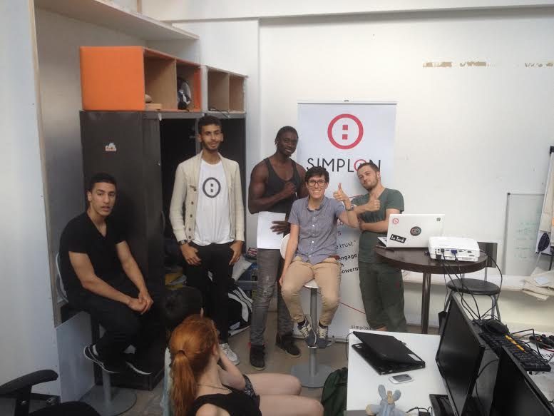

Nathalie Pululu RH chez Sfeir est venu présenter sont entreprise à la promo#3.
Nathalie Pululu RH chez Sfeir est venu présenter sont entreprise à la promo#3.
Pendant cet échange informel, on a traité l'évolution du métier de développeur en France.
Les différentes formations proposées par l 'équipe de SFEIR et de leur partenaire notamment Google avec qui ils forment sur la technologie angular.js.
On était abordé pendant cet échange le concept d'incubateur pour juniors qui sont formé par un team leader en interne.
Marine Romezin de Squid Solutions est venu nous présenter et échanger autour des différents métiers autour de la data présent dans son entreprise.
Elle a pu échanger avec la promo#3 des notions essentiels touchant à la Big data.
La promo a eu droit a une introduction aux différents API de Squid Solutions notamment « Squid Analytics » sur lequel elle a pu échanger.